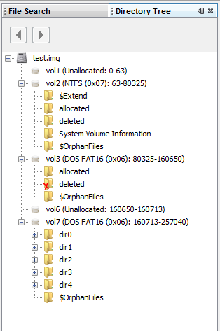

Directory Tree is one of the main windows in Autopsy. Here, you can see and analyze all the images (also volumes and directories inside that images) which are shown in tree format. You can also see the details of the image, volume, and the file system from directory tree.
To see how to open Directory Tree, click here.
Note: The Directory Tree Window is opened and closed automatically. If there's a case opened and there is at least one image inside that case, Directory Tree Window can't be closed.
To see how to use Directory Tree, click here.
Here's an example of a Directory Tree window: 